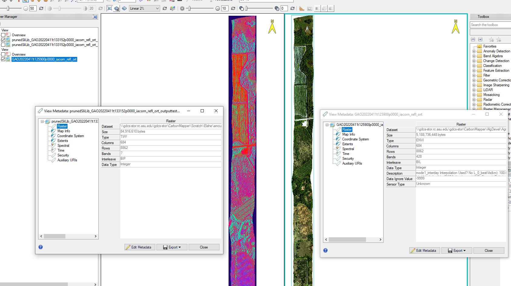

Readme
Python implementation of AutoMCU spectral unmixing algorithm:
Asner, G. P., and K. B. Heidebrecht. 2003. Imaging spectroscopy for desertification studies: Comparing AVIRIS and EO-1 Hyperion in Argentina drylands. IEEE transactions on geoscience and remote sensing: a publication of the IEEE Geoscience and Remote Sensing Society 41:1283–1296. Auomated Monte-Carlo Unmixing (AutoMCU) is an unmixing approach, the algorithm was written in C++ language and has translated to Python by Nick Vaughn in 2023.
Scope
AutoMCU: Quantifying fractional coverage in image pixels. Given n bundles of endmember spectra, randomly select groupings of bundles and unmix the image spectrum. After repeating over iterations and determine the mean endmember fraction and its std dev for each image pixel. The mean endmember fraction is the final unmixing result. The std dev is used to determine the confidence of the unmixing result.
Monte Carlo Unmixing (MCU) spectral mixture analysis, is a method for estimating the fractional coverages of endmembers in a pixel. After installing the amcu package by pip install amcu.zip, the command line to run the code for 3 end members of PV, NPV, BS:
`
python amcu_cli.py path_to_input_image --sum_to_one --wl_range "650,800" --wl_range "2030,2300" path_to_output_image.tif spectral_library_pv.csv spectral_library_npv.csv spectral_library_bs.csv --names "PV,NPV,Bare" --scale 10000 --nointerp --emfwhm --iterations 50 --num_blocks '0,10' -v
`
Each argument in the command line is described:
Required Arguments/inputs
* The input image is a 3D array of size (nbands, nrow, ncol). For Hyperspectral images from GAO nbands = 428.
* The output image is a 3D array of size (nbands, nrow, ncol). The number of bands for the output image is 7 bands, the first 3 are the endmember fractions based on the order they set
in the command line. For instance for the above command line the first 3 bands are f(pv), f(npv), f(bs) respectively. The 3 following bands are std(pv), std(npv), std(bs), and the 7th band is the mean. Fractions are values 0-1.0
scaled by 1000, set by –scale option.
* The spectral library files are csv files with a header row and samples listed in columns, bands as rows, the first column is the wavelength and and if –emfwhm is specified, fwhm should be column 2. The spectral library files are used to interpolate the endmembers to the same wavelength as the input image.
Spectral libraries should be in csv format, if option –nointerp is False. The example spectral libraries that used to test this algorithm can be found in data folder for 3 end members: PV, NPV, BS.
* The names of the endmembers are used to name the output bands.
* Algorithm runs over 2 region of the wavelengths: red-edge bands and swir2 bands. with –wl_range theses range of wavelengths are specified by user. A 2-element list or tuple of floats, i.e.” (600.0,750), that will be used to identify the band ranges used for unmixing. Data from the bands specified by these wavelengths will be lumped into a single array for fitting. A minimum of one wl window must be specified. Both wl_range and band_range cannot be specified.
* The –iterations = 50 is the number of iterations to run the unmixing algorithm.
Optional Arguments/inputs
* The –num_blocks = ‘100,200’ is the row number to use for the unmixing algorithm, within that range of rows in the input image, if this option is not used the automcu will unmix all the rows in the image.
The first number is the first row number of blocks to use, the second number is the end row number of blocks to use.
* The scale option is used to scale the output fractions to integers, the default is 1000.
* The nointerp option is used to turn off interpolation of the spectral library files to the input image wavelength. If this option is set to False, the spectral library files should be in csv format.
* The –emfwhm = False is used to specify that the spectral library files have a fwhm column.
* The -v option is used to turn on verbose mode, which prints out the progress of the unmixing algorithm.
* –sum_to_one option is to force the fractional endmembers equal to 1.
* Algorithm runs over 2 region of the wavelengths: red-edge bands and swir2 bands. with –wl_range theses range of wavelengths are specified by user.
More information about other optional arguments can be found in cli.py or by typing –help after installing the package.

{kind=link}
Use amcu as a python package
The automcu can be used as a package, by installing amcu.zip file, following steps can be used to do that:
make a zip file from the folder that contains the modules you want to be included in the package.
open an terminal and change the directory to where the zip file is located.
Install the paython package:
`pip install amcu.zip`Open a Python terminal and import the package
`from automcu.amcu import automcu`Description of the automcu package can be read using help command:
`help (automcu)`The automcu package can be used in a python script as follows: